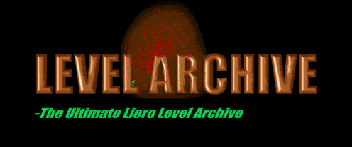

Welcome
to the Levels Archive page! Feel free to download as many as you want.
You can download
levels made by other people to battle in.
These can be
made either with WormHole, LevTools or
the original level editor
that comes with the game. Remember to put
the level files in your
Liero folder so that you can play them.
To open these files, you need Winzip.
You can try out my Level Pack Here,(it includes over 400 levels and all the levels down below!)